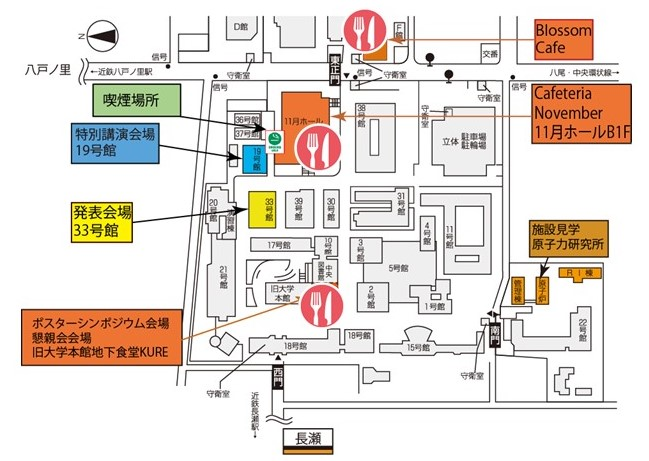

会期中の昼食について
1） 1日目：11月25日(土)
下記表の通り、学内の食堂が営業しています。ただし、営業時間に若干の違いがありますので注意してください。また、大学周辺の食堂等も使用できます。
2) 2日目：11月26日（日）
日曜日であるため、旧本館地下食堂ではメニュー限定で営業を行います。その他の学内の食堂は休業です。「大学通り」の飲食店も休業が多いですが、徒歩で10分程度の距離であればいくつか営業を行っている店もあります。 （近畿大学周辺ランチマップ）
3) 両日を通じての休憩場所
「旧本館地下食堂」では営業時間中、弁当等を持ち込み、休憩が可能です。また、21号館1階（大学生協前）や4号館1階には休憩できる椅子・テーブルが備え付けてありますので御利用していただけます。
尚、学内では喫煙箇所を除き禁煙となっておりますので、歩行中の喫煙等はご遠慮ください。また、ごみにつきましても分別収集を行っておりますので、併せてご理解の上、ご協力をお願いいたします。喫煙箇所は「37号館前」「11号館中庭」に御座います。
東大阪キャンパス 昼食案内
|
店 名 |
KURE |
Cafeteria November |
|
場 所 |
旧本館 地下 |
11月ホール 地下 |
|
11/25(土) |
12：00～17：00 |
11：00～15：00 |
|
11/26(日) |
おろしカツ定食 限定100食 11:30～13：30 |
休業 |
Blossom Cafe内 昼食案内
|
店 名 |
モスバーガー |
すき家 |
Bowl Kitchen |
|
11/25(土) |
10：00～14：00 |
10：00～14：00 |
10：00～14：00 |
|
11/26(日) |
休業 |
休業 |
休業 |
東大阪キャンパス内ランチマップ
